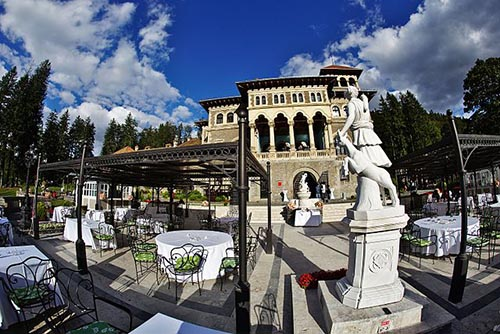

Castelul Cantacuzino
Mai puţin cunoscut decât Peleşul, dar cu o istorie la fel de frumoasă, Castelul Cantacuzino din Buşteni este un „rival“ turistic pentru fosta reşedinţă de vară a lui Carol I din Sinaia. Castelul a fost ridicat de Gheorghe Grigore Cantacuzino, poreclit „Nababul“, datorită averii fabuloase, şi despre el circulă legenda că prinţul ar fi vrut să-i paveze curtea şi să-i învelească acoperişul cu monede din aur
Cu o splendidă privelişte asupra Văii Prahovei şi spre Crucea Caraiman, Castelul Cantacuzino din Buşteni se înalţă semeţ la poalele muntelui Zamora, în cartierul cu acelaşi nume al staţiunii. Piatra de temelie a castelului a fost pusă în 1901, pe locul unei vechi reşedinţe a Cantacuzinilor, o veche cabană a familiei, iar construcţia, realizată în stil neoromânesc, în piatră şi cărămidă, a fost terminată în 1911, după planurile arhitectului Grigore Cerchez. Castelul a fost ridicat la cererea prinţului Gheorghe Grigore Cantacuzino, (n. 22 septembrie 1832, Bucuresti, d. 23 martie 1913, Bucuresti), unul dintre cei mai bogaţi oameni ai timpului său, care a fost de două ori primar al Bucureştiului şi tot de două ori prim-ministru al României. Se trăgea din vechea familie nobilă Cantacuzino, fiind un descendent al voievozilor români şi al împăraţilor bizantini Cantacuzino. Datorită averii colosale, care i-a permis să construiască trei palate (două în Prahova şi unul în Bucureşti, pe Calea Victoriei, actualul Muzeu Naţional George Enescu), prinţul Gheorghe Grigore Cantacuzino a fost poreclit “Nababul”. Era cel mai mare proprietar de pământuri din România la vremea respectivă şi putea concura chiar cu regele Carol I, atât ca avere cât şi ca poziţie socială şi ca nume, prin descendenţă.
Este şi motivul pentru care istoria l-a reţinut cu o legendă legată de castelul din Buşteni, aceea că ar fi vrut să-i paveze curtea cu monede din aur. „Nababul“ ar fi vrut să-şi acopere castelul nu cu ţiglă, ci tot cu monede de aur, dispuse pe cant, şi nu în forma clasică, de solzi de peşte, pentru că astfel ar fi intrat mai multe. În felul acesta, palatul său din Buşteni ar fi întrecut în măreţie Castelul Peleş din Sinaia. Până la urmă, Nababul a renunţat la idee. Exterioare grandioase Castelul, de formă pavilionară, are o o suprafaţă de 3.148 mp şi este înconjurat de un parc imens, ale cărui alei te poartă spre o grotă, pe care o poţi străbate pitit sub perdeaua de apă, cascade şi fântâni arteziene în care lenevesc păstrăvi. Castelul are un corp central format din demisol, parter şi etaj, cu fundaţie din beton, pereţi din piatră cioplită şi învelitoare din ţiglă, un pavilion de serviciu, o vilă administrativă şi o capelă. Exteriorul este bogat ornamentat, stilul construcţiei amintind de stilul neo-românesc datorită logiei cât şi foişorului care servea la urmărirea vânatului, de tip culă, dar şi de cel brâncovenesc. Coloanele amintesc de Palatul Brâncovenesc de la Mogoşoaia, iar gabaritul castelului permite comparaţia cu Palatul patriarhal, complexul Peleş din Sinaia şi cel de la Cotroceni. Atât curtea castelului cât şi exteriorul său sunt pavate şi placate cu piatră din zonă
La interior, chiar dacă nu mai are aproape nimic din mobilierul original, castelul are suficiente atuuri pentru pasionaţii de monumente istorice. Vitraliile, stucomarmura, consolele, plafoanele cu grinzi aparente şi pictate, balustradele din lemn, piatră sau fier forjat, feroneria turnată în bronz şi bogat ornamentată sunt realizate cu mare măiestrie şi conferă ambianţei interioare un pronunţat caracter romantic, chiar dacă structura coloanelor interioare şi sculptura tăbliilor uşilor amintesc de repertoriul decorativ brâncovenesc. Şemineele realizate din piatră albă, ornamentate cu mozaicuri policrome împlinesc atmosfera de reşedinţă boierească. De asemenea, sala de primire adăposteşte o colecţie de heraldică unică în România reprezentând blazoanele familiilor de boieri încuscriţi cu cantacuzinii şi o friză de picturi votive, comndate la Veneţia, cu iluştrii membri ai familiei Cantacuzino din ramura munteană. Sub fiecare portret din vitralii este scris în latină “Ceea ce nu răneşte învaţă”. În câteva săli, vopsite în verdele fostului sanatoriu TBC care a funcţionat în castel în timpul comunismului, restauratorii au scos la lumină culorile originale ale pereţilor, încărcate de motive şi culori puternice. Pentru pictura murală a castelului, Nababul a adus artişti plastici de la Veneţia. Doar câteva fotografii mai amintesc de luxul interioarelor. În acestea se observă Salonul Ardelenesc, Salonul Mare cu picturile Cantacuzinilor şi cu heraldica, Regina Maria şi Principesa Ileana la inaugurare